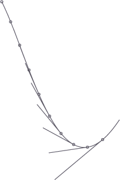

bezier.point()
Syntax
point(path, t, segments=None)
Description
Returns coordinates for the point at t on the path, which is a value ranging between 0.0 and 1.0. When t is 0.5 for example, coordinates are returned for the point that would be in the middle of the path.
The return value is a PathElement object that has a number of properties: like x, y and cmd for example. Read the tutorial on paths to see what you can do with the points of a path.
Example
bezier = ximport("bezier") autoclosepath(False) beginpath(100,100) curveto(150,200, 200,450, 300,300) path = endpath() for t in range(10): pt = bezier.point(path, t*0.1) oval(pt.x-2, pt.y-2, 4, 4) line(pt.x, pt.y, pt.ctrl1.x, pt.ctrl1.y)

The point() command calculates the length() of the path before determining where t is. When you supply the list of segment lengths yourself, as returned from length(path, segmented=True), point() works considerably faster in a for-loop, since it doesn't need to recalculate the length during each iteration:
import bezier autoclosepath(False) beginpath(100,100) curveto(150,200, 200,450, 300,300) path = endpath() lengths = bezier.length(path, segmented=True) for t in range(10): pt = bezier.point(path, t*0.1, segments=lengths) oval(pt.x-2, pt.y-2, 4, 4) line(pt.x, pt.y, pt.ctrl1.x, pt.ctrl1.y)